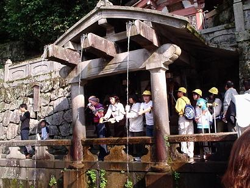

・・知らんかった（これは観光から帰って調べた）。ちゃんと事前に調べておけばもうちょっとまともな願いもしたものを・・俺この神様に「俺に金をくれ」って祈ったよ。
その八坂神社を歩いてたらなぜか「坂本竜馬・中岡慎太郎像」（写真右）があった。坂本竜馬とかは江戸後期の人だってのは日本史やってない僕でも分かる。これも昔の神秘かと思い、まあ納得。次へ。
寺巡りなんて小学校の修学旅行以来なんですが、寺ってでかいね、意外に。寺の全体写真撮ろうとしてもかなり後ろまで下がらないと写真に収まりきらないし、八坂神社に至っては後ろ下がってたら建物にはばまれこれ以上下がれないとの仕打ちまで受ける始末。だから斜め向きの写真になってたりします、まあこれはこれでいいか。
 次に行ったのは清水寺。なんかめっちゃ山の方にあった。あと大量の修学旅行生にも会った。八坂神社とかはそこまで人多くはなかったものの、こういうところ（どういうところ？）はやっぱり人が集まるようです。「清水の舞台から飛び降りる」って言葉ありますよね？固い決意とかを表す時とかに使う言葉、実際清水の舞台から飛び降りるってのがどれくらいすごいことなのか見てみたら、いやもう超すげえ。ビルの４、５階かそのくらいの高さだと思うんですよ。そりゃ高さ的にもすごいんですけどね、普通ビルのそのくらいの高さから飛び降りたら骨折しますから。この写真だと分かりにくいかもしれませんが、
次に行ったのは清水寺。なんかめっちゃ山の方にあった。あと大量の修学旅行生にも会った。八坂神社とかはそこまで人多くはなかったものの、こういうところ（どういうところ？）はやっぱり人が集まるようです。「清水の舞台から飛び降りる」って言葉ありますよね？固い決意とかを表す時とかに使う言葉、実際清水の舞台から飛び降りるってのがどれくらいすごいことなのか見てみたら、いやもう超すげえ。ビルの４、５階かそのくらいの高さだと思うんですよ。そりゃ高さ的にもすごいんですけどね、普通ビルのそのくらいの高さから飛び降りたら骨折しますから。この写真だと分かりにくいかもしれませんが、落ちた先って、岩なんです、しかもめっちゃ固そうな。それになんか平坦じゃないみたいで、落ちたら人体粉砕確定な空気出てました、実際飛び降りた人はいるんだろうか？
ここでちょっと清水寺の説明。音羽山清水寺は、約１２００年前の奈良時代の末、宝亀９年（７７８年）の開創で宗派は、北法相宗。宗旨は「万法唯識」「三界唯一心。心のほかに別の法はなく、心と仏および衆生、この三つは差別なし」、あらゆる現象(相)は唯(ただ)人間の心のはたらきの反映であるとする、とか。偉そうに載せてはいますが俺もあんまり理解できちゃいません。
清水の舞台なる場所を通り、下っていくと清水寺といわれてイメージする湧き水の所に着きました。この音羽の滝から流れる３本の滝ってのは右から「長寿の滝」「恋愛の滝」「学問の滝」という滝でどれか１つの願いが叶うってことらしい。でも実際は六根清浄、諸願成就を祈るもので『健康・学業・縁結び』というのは実は観光用だみたいなことが書いてあるのをどこかで見たけど、そんなのは頭の片隅にでも押しやり一緒に観光している友達（らウル）と恋愛の滝で水を汲む。
{kind=link}